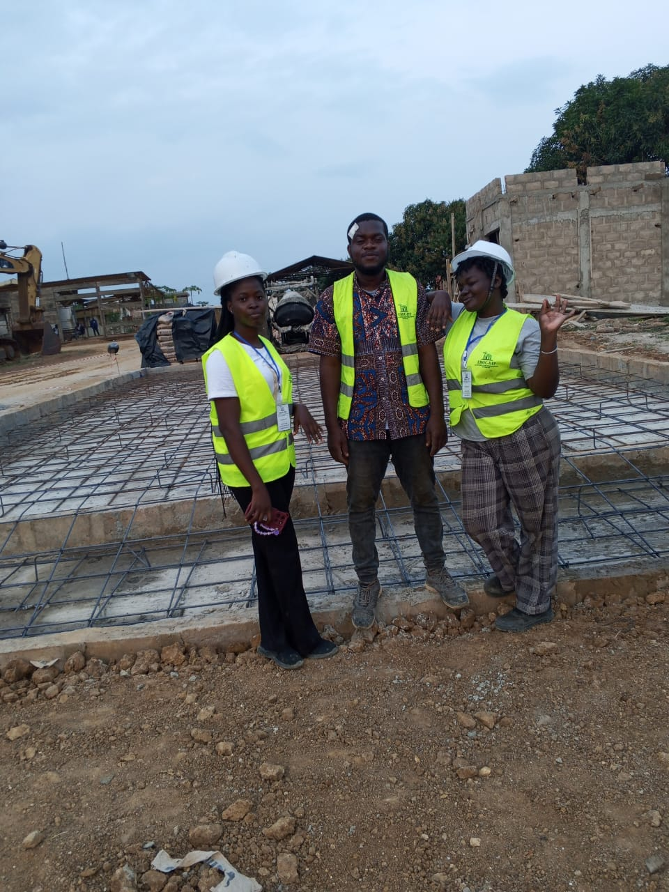
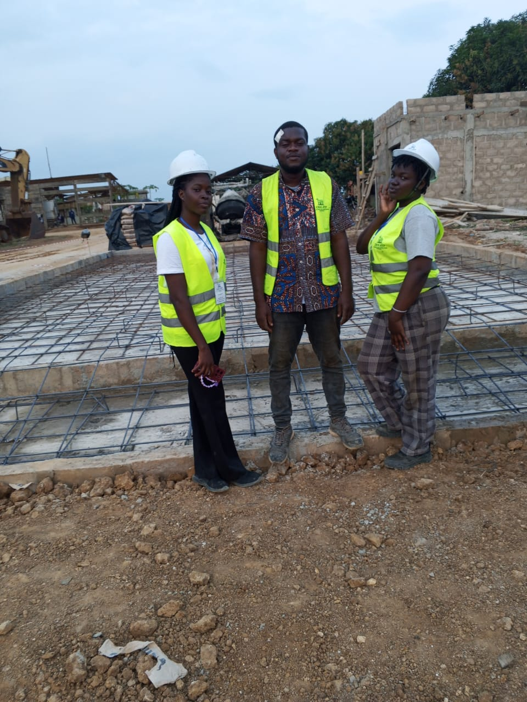
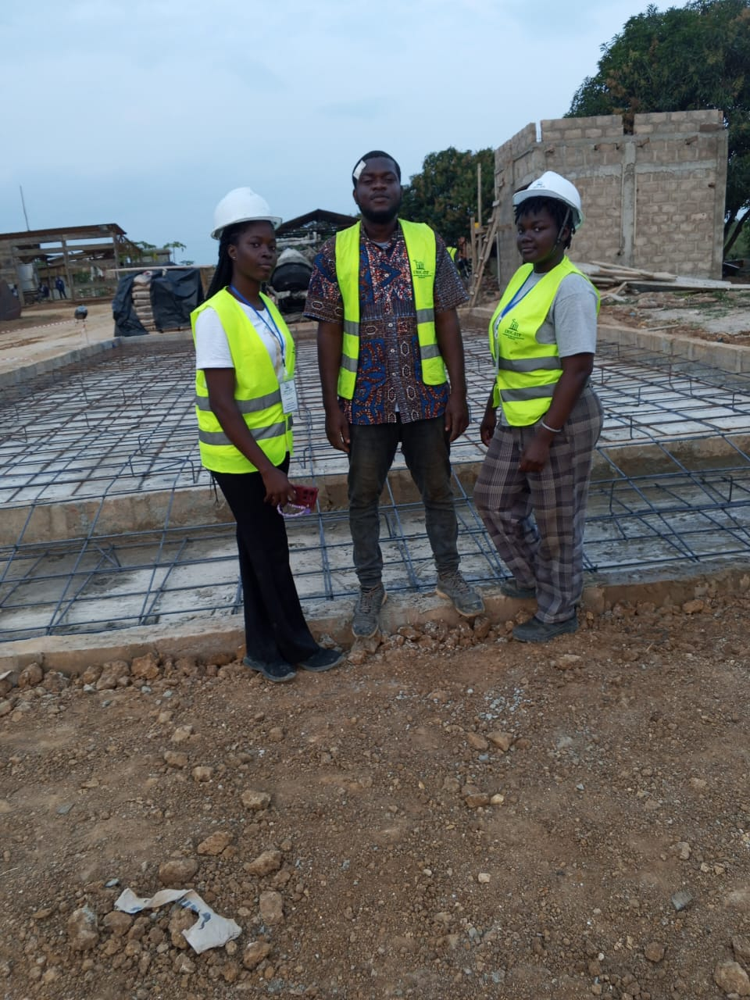

Études préalables
Analyse des besoins, hypothèses techniques et scénarios de mise en œuvre selon vos objectifs.
Notre équipe vous accompagne dans l’analyse technique, la structuration du projet et la préparation des documents nécessaires à une exécution maîtrisée.
Analyse des besoins, hypothèses techniques et scénarios de mise en œuvre selon vos objectifs.
Préparation des plans techniques, estimations budgétaires et documents d’aide à la décision.
Appui au pilotage, suivi des parties prenantes et conseils pratiques de la conception à la livraison.
Analyses techniques, plans, estimations budgétaires et recommandations de mise en œuvre.
Oui, notre intervention en amont permet de sécuriser les choix techniques et financiers.
Un cadrage initial est réalisé pour définir objectifs, livrables et planning.

Analyse projet
Cadrage des besoins et recommandations techniques.

Plans & documents
Production des plans et supports techniques.

Chiffrage
Estimation budgétaire et scénarios d’optimisation.
Nous pouvons démarrer par un échange court pour clarifier votre besoin et les livrables attendus.
Lancer une étude